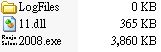
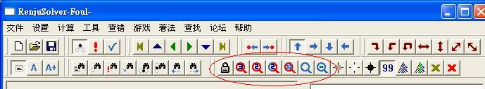
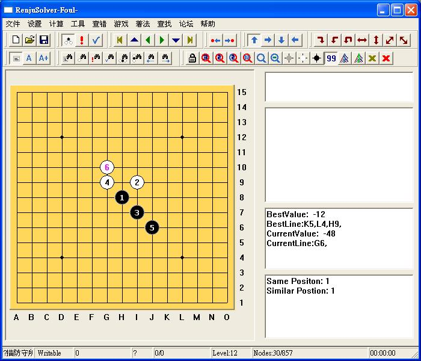
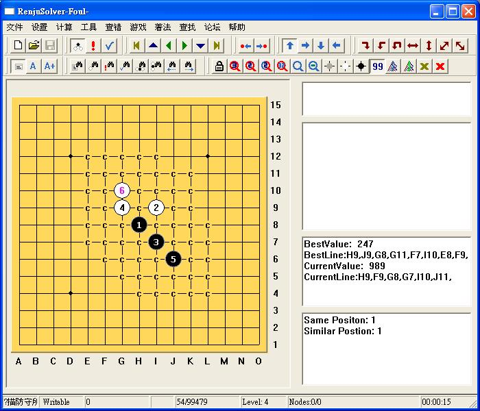
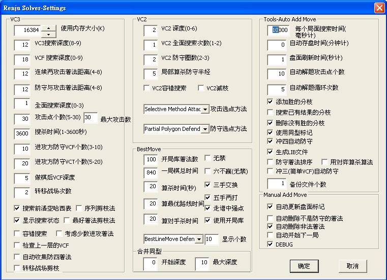
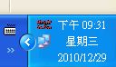

目前規則的改革它可扮演著煸風點火的角色，要說它是罪魁禍首也不為過，因為這軟體最強大的功能就是能快速做出終結譜或稱地毯譜，計算力很強大，算攻擊勝比黑石還快，佈子選點雖較黑石還略遜一籌，但對研究棋局己經非常有幫助，本站的棋譜即是出自它之手。
下載後在壓縮檔裡應該會看到這三個檔案，如沒看到或有缺少，可能是被防毒軟體檔住了。

正版聽說目前出到2011版了，在大陸一個賣200人民幣，本破解版有些功能還是無法使用，但重點是做譜功能可用就好。
打譜方式和 Renlib 一樣，這就不多介紹了，直接來介紹他的獨門絕招，地毯棋譜的製作。
看到圈起來的工具列，鎖頭圖案是計算設定，紅色放大鏡是算攻擊，藍色是算防守。
算攻擊有分計算 VC3、VC2 的功能，藍的中間沒點是算當前局面防點，若是要算局面裡己經有打出後續變化，就可選有一點的，它會照你打的變化計算下去，停止計算就按最右邊的紅色Ｘ，2008以後的版本有支援快速鍵，把滑鼠移到按鈕上就看得到按鈕的功能和快速鍵了。

先教算防守，以這個浦月的敗５為例，我們知道這個白６是必勝的，但想知道黑的所有防守方法。
我們先把譜打到白６，按一下藍色的放大鏡。

15秒後（看右下角有計算時間），出現下圖，標ｃ的是程式己算清的必敗點，你可以點進去看勝法。
若未標示，則是還未算出結論點的，算出必勝點會標ａ，可以在「設置」裡選「盤面標記」改成自己習慣的記號。

若要算進攻，可以把上面盤面白６按 Delete 刪除，留下前五子，這時感覺要做棋才能勝（沒 VCT），就點一下紅色２算 VC2，一樣能算出上圖局面。
大概的做譜方法就是這樣，現在知道為什麼他是規則改革的罪魁禍首了吧。
１連點兩下盤面的棋子，就可計算該局面的 VC3 攻擊。
２算防守時，請按鎖頭那個鈕，把下圖 VC2 深度設為０，可減少計算弱點的時間；右上角每個局面搜索時間我覺得設 3000~5000 毫秒就夠了（這是設定計算防守的時間），若這個時間還想不出來大概是較難的 VC3、VC2 或沒結論的點。
３算攻擊時，如果要用到 VC2，再把 VC2 設回來，他雖有建議值，但超過也沒關係，左上的 VC3 搜索深度看過有人設12。
其他設定有些有效，有些好像沒效，各位可以自己試試。
４有時需要佈子時可以請黑石代勞，另外他有時也會誤算，沒勝算成有勝，也可以用黑石檢查。
５勾選容錯搜索或減枝法可以增加計算速度，但也會增加誤算的機會（建議都不勾）。

上面是用 Piaip AppLocale 的簡體模式打開 2008.exe，所以文字不會出現亂碼。
縮小視窗時，若工作列找不到，有可能是按到「設置」裡的「最小化到系統托盤」，會變成右下角的小圖，再點一下就會跳出來。

抓棋譜的部份可以參考愛五子棋打譜程式2.2的說明。